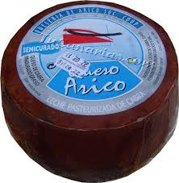

QUESO ARICO
El queso curado de cabra con cobertura de pimentón y gofio de la Quesería de Arico, en Tenerife, ha resultado premiado como mejor queso del mundo en la gran final de los World Cheese Awards 2008, que tienen lugar en Dublín, a las que han accedido los mejores de cada categoría de entre más de mil quinientos productos de todo el mundo. El torneo reunió más de mil quinientos quesos del mundo Los mejores quesos de cada categoría pasaron a la Gran Final, a la que sólo tenían acceso quince concursantes, donde finalmente resultaría vencedor el citado queso de Arico. La producción canaria ha cosechando cuatro medallas de oro en esta edición, que han correspondido a Finca de Uga y a la Quesería de Arico, con dos preseas cada una. Asimismo, han recogido cinco platas, repartidas entre Maxorata y Guriamen de Fuerteventura, Finca de Uga de Lanzarote, El Cañizo de La Palma y Benijos de la Finca Teisol, Tenerife.

Pagina principal